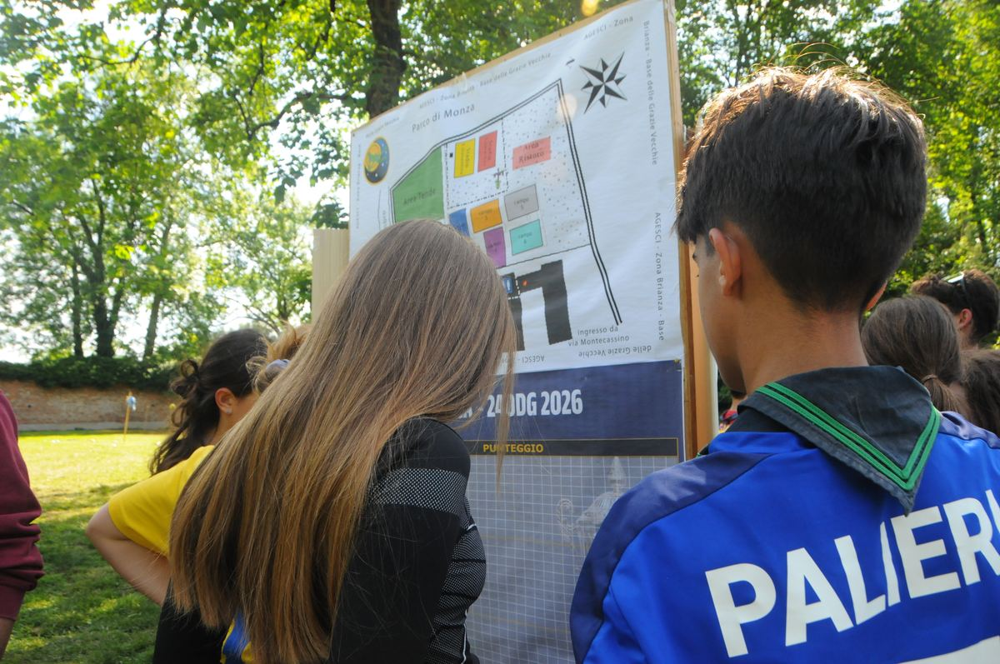

Partecipa con il tuo reparto o clan
Tutto quello che serve sapere per portare la tua squadra alle Grazie: stato delle iscrizioni, come funzionano e cosa preparare.
Le iscrizioni per l'edizione in corso sono al momento chiuse. Restano aperte le richieste di informazioni per la prossima edizione: scrivici e ti terremo aggiornato su date di apertura, quote e scadenze.
Controlla su questa pagina se il tuo reparto rientra nella categoria E/G oppure R/S & CoCa, e leggi il regolamento della categoria corrispondente.
Il modulo di iscrizione e il modello di liberatoria sono disponibili nella pagina Documenti, insieme alle scadenze di ogni edizione.
La quota di partecipazione copre logistica, pasti e materiali di gara per l'intera 24 ore; le coordinate per il bonifico vengono comunicate via email dopo l'invio del modulo.
Riceverai una email di conferma con l'orario di arrivo alla Base Scout Le Grazie Vecchie e le ultime indicazioni logistiche.

La planimetria della base viene affissa all'ingresso: campi, aree tende e punteggio, tutto a colpo d'occhio.
Quanti partecipanti può portare ogni reparto?
Il numero massimo per squadra viene comunicato nel regolamento della propria categoria, disponibile nella pagina Documenti.
È previsto il pernottamento?
Sì, l'evento si svolge senza interruzioni per 24 ore: il pernottamento in base è parte integrante dell'esperienza.
A chi possiamo scrivere per dubbi sull'iscrizione?
Scrivi a 24oredellegrazie@gmail.com, ti risponderemo il prima possibile.